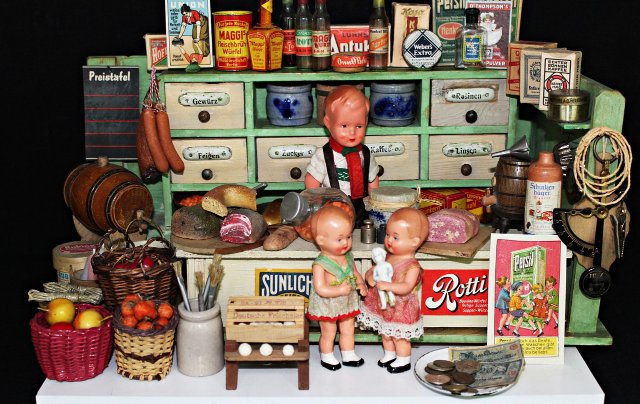
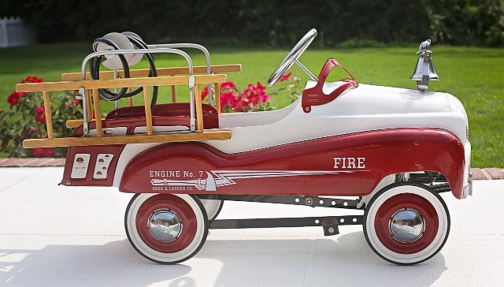
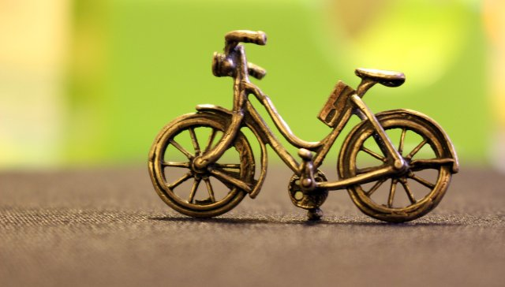

Speelgoed dat blijft
Wij herstellen wat kapot is en verkopen wat te goed is om weg te gooien.
Over het atelier

De Houten Trein is een werkplaats in Turnhout waar oud speelgoed een tweede leven krijgt. Wij lijmen, schuren, schilderen en vervangen onderdelen — alles met de hand.
Wat niet meer te herstellen valt, halen we uit elkaar. De bruikbare stukken belanden in onze onderdelenkast, de rest gaat gescheiden naar het containerpark.
Breng je kapotte speelgoed gerust binnen. Je hoort binnen de week wat het kost, en pas daarna beslis jij. Voor onderdelen die we niet in huis hebben, zoeken we mee bij collega-ateliers in de buurt.
Uit de winkel


Zo gaat het
- Je brengt het speelgoed binnen, zonder afspraak.
- Wij bekijken het en mailen je binnen de week een prijs.
- Na jouw akkoord gaat het in herstelling, reken op twee weken.